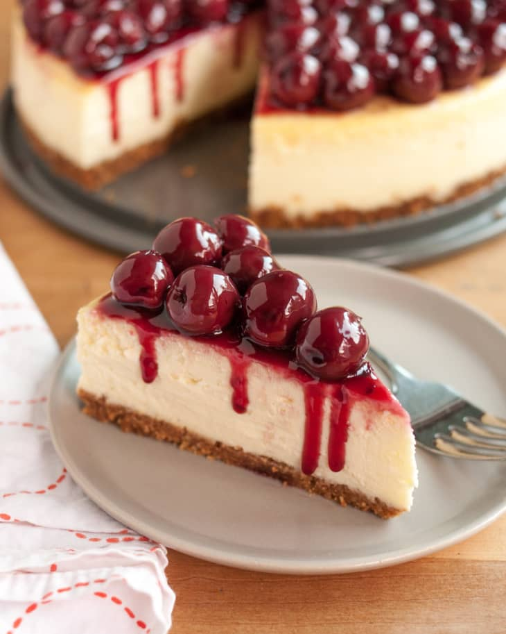

Cheesecake

Description:
Cheesecake is a sweet dessert consisting of one or more layers. The main, and thickest, layer consists of a mixture of a soft, fresh cheese (typically cottage cheese, cream cheese or ricotta), eggs, and sugar. If there is a bottom layer, it most often consists of a crust or base made from crushed cookies (or digestive biscuits), graham crackers, pastry, or sometimes sponge cake.[1] Cheesecake may be baked or unbaked (and is usually refrigerated).
Cheesecake is usually sweetened with sugar and may be flavored in different ways. Vanilla, spices, lemon, chocolate, pumpkin, or other flavors may be added to the main cheese layer. Additional flavors and visual appeal may be added by topping the finished dessert with fruit, whipped cream, nuts, cookies, fruit sauce, chocolate syrup, or other ingredients.
Ingredients:
- 1 ¾ cups HONEY MAID Graham Cracker Crumbs
- ⅓ cup butter, melted
- 1 ¼ cups sugar, divided
- 3 (8 ounce) packages PHILADELPHIA Cream Cheese, softened
- 1 cup BREAKSTONE'S or KNUDSEN Sour Cream
- 2 teaspoons vanilla
- 3 medium (blank)s eggs
- 1 (21 ounce) can cherry pie filling
Steps:
- Heat oven to 350 degrees F.
- Mix graham crumbs, butter and 1/4 cup sugar; press onto bottom of 9-inch springform pan.
- Beat cream cheese and remaining sugar in large bowl with mixer until blended. Add sour cream and vanilla; mix well. Add eggs, 1 at a time, beating on low speed after each addition just until blended. Pour over crust.
- Bake 1 hour to 1 hour 10 min. or until center is almost set. Run knife around rim of pan to loosen cake; cool before removing rim. Refrigerate cheesecake 4 hours.
- Top with pie filling before serving.
home